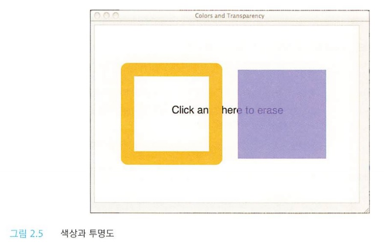

색상과 투명도
앞 절에서 소개한 애플리케이션에서는 기본 색상인 검은색을 이용해 직사각형을 그리고 내부를 칠했다.
다른 색상으로 연습해 보고 싶다면 콘텍스트의 strokeStyle 속성과 fillStyle 속성을 변경해보자.
[그림 2.5]에서는 검은색 이외의 색상을 사용해 두 개의 직사각형 내부를 칠한 [그림 2.4]의 애플리케이션과 비슷한 애플리케이션을 보여주고 있다.

위 애플리케이션에서는 진한 노랑색과 반투명 파랑색을 사용하고 있다.
[그림 2.5]에서 텍스트가 반투명한 파랑색을 통해 비쳐보이는 투명 효과를 확인할 수 있다.
반명 왼쪽에 있는 직사각형에서는 테두리 색상이 불투명하므로 테두리를 통해 텍스트가 보이지 않는 모습에 주목하자.
정상적인 CSS 색상 문자열이라면 strokeStyle과 fillStyle 속성의 값으로 사용할 수 있다.
CSS 색상 문자열을 명시할 수는 모든 방법을 소개한 전체 명세서는 링크에서 확인할 수 있다.
색상은 yellow, silver, teal과 같은 색상 이름이나, RGB를 위한 16진법, HSLA, HSL, RGBA, RGB 등을 사용할 수 있다.
그뿐만 아니라 골든라드(goldenrod)나, 다크살몬(darksalmon) 또는 초콜릿 등과 같이 SVG 1.0 색상 이름을 명시할 수도 있다.
다음은 색상 문자열에 대한 예제이다.
- #ffffff
- #642
- rgba(100,100,100,0.8)
- rgb(255,255,0)
- hsl(20, 62%, 28%)
- hsla(50, 82%, 33%, 0.6)
- antiquewhite
- burlywood
- cadetblue
- 브라우저에서 모든 SVG 1.0 색상 이름을 지원하지 않을 수도 있다.
-
CSS3 색상 명세서에는 다음과 같이 명시되어 있다.
워킹 그룹(Working Group)은 CSS3를 이용해 애플리케이션을 구현할 때 모든 속성이나 값을 사용한다고 생각하지 않는다.
위 글을 읽었다면 여러분이 사용하는 브라우저에서 CSS3 색상 명사세어에 명시된 모든 색을 지원할 것이라고 기대하지 말자.
- HSL 색상 값
-
CSS3 색상 명세서에 따르면 RGB는 CRT(Cathode Ray Tubes, 브라운관)를 기반으로 하고 CRT를 지향하며 사용하기 어렵다는 두 가지 중대한 결점이 있기 때문에
CSS3에 HSL을 추가했다.
RGB처럼, HSL 값은 세 가지 구성 요소가 있다.
하지만 RGB의 세 가지 구성 요소인 빨간색, 녹색, 파란생과는 달리, HSL의 세 가지 구성요소는 색조, 채도, 밝기를 나타낸다.
HSL 색상은 색상환에서 선택할 수도 있다.
참고로, 색상환에서 빨간색은 0도(360도), 녹색은 120도, 파란색은 240도에 있다.
HSL 색상에 명시된 첫번째 값은 색상환의 각도를 나타내며 두번째와 세번째 값은 채도와 밝기에 대한 백분율을 나타낸다.
예를 들어, 채도를 100%로 설정하면 색상은 원색으로, 그리고 0%로 설정하면 회색으로 표시된다.
밝기를 100%로 설정하면 하얀색으로, 50%로 설정하면 보통으로 표시된다.
(참고: CSS3 색상 명세서에서는 보통을 의미하는 'normal'을 따옴표로 묶어 사용하며 의미하는 바를 정확하게 설명하고 있지 않다.)
HSL 색상 값은 RGB로 쉽게 전환할 수 있으며 그 반대로도 전환할 수 있다.
그리고 어떤 색상이 사용하기 쉬운지와 어떤 색상을 사용해야 할지는 여러분이 판단해야 할 문제다.
- globalAlpha 속성
-
rgba()나 hsla()의 알파 속성을 반투명 색상으로 지정하는 방법 외에, 브라우저에서 여러분이 그리는 모든 도형과 이미지에 적용할 수 있는 globalAlpha 속성도 사용할 수 있다.
globalAlpha 속성값은 반드시 완전히 투명한 상태를 나타내는 0.0부터 완전히 불투명한 상태를 나타내는 1.0까지 사용할 수 있으며, 기본값은 1.0이다.
- strokeColor와 fillColor 대신 strokeStyle과 fillStyle을 사용하는 이유는 무엇일까?
-
strokeStyle 속성과 fillStyle 속성을 strokeColor와 fillColor로 이름을 붙이지 않았는지에 대해 의아하게 생각할 수도 있다.
이렇게 이름을 붙인 이유는 strokeStyle 속성과 fillStyle 속성을 CSS3 색상 문자열뿐만 아니라 그라디언트나 패턴으로 명시할 수도 있기 때문이다.
다음 절에서 그라디언트와 패턴에 대해 알아보자.